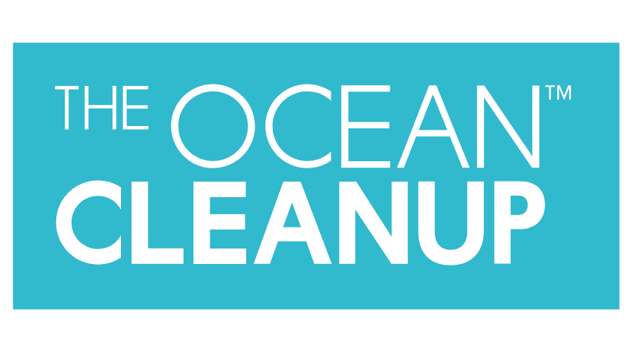
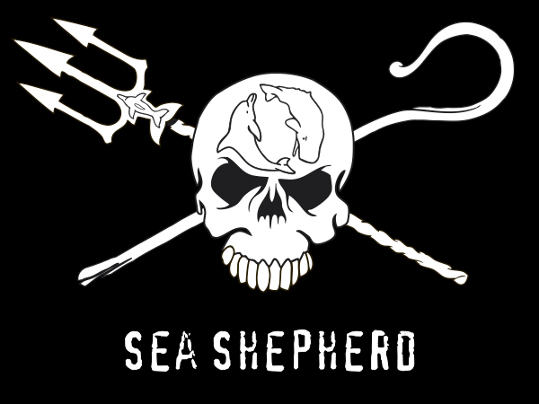
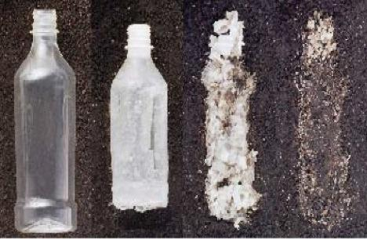
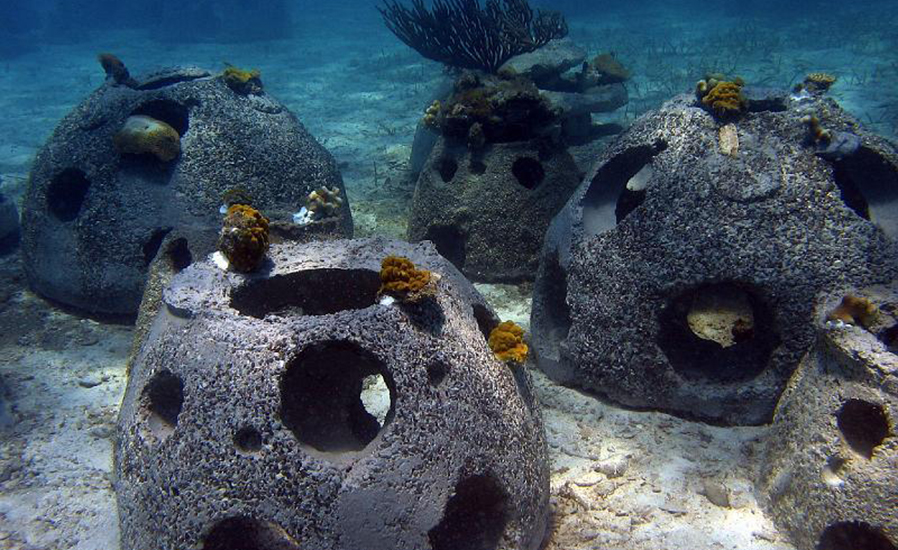
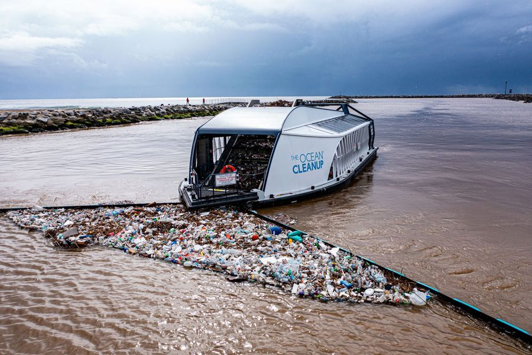

Marine Conservation Efforts
Protecting our oceans for a sustainable future
Organizations Protecting Marine Life
WWF
Working to preserve marine ecosystems globally.

Ocean Cleanup
Innovative solutions to remove plastic from oceans.

Sea Shepherd
Defending marine wildlife from illegal activities.
Government Policies & Regulations
- Fishing Laws - Preventing overfishing and habitat destruction.
- Plastic Bans - Reducing ocean plastic waste.
- Marine Protected Areas (MPAs) - Safe zones for marine species.
Innovative Solutions in Conservation

Biodegradable Plastics
Reducing long-term plastic pollution.

Artificial Coral Reefs
Helping restore marine ecosystems.

Ocean Cleanup Projects
Large-scale cleanup efforts worldwide.
Take Action
Want to make a difference? Volunteer, donate, or spread awareness!
Join the Movement